1:07:48 · 21 OPERE
L'arte come liberazione dell'anima.
Il filo del discorso
L’arte viene proposta come uno spazio in cui sottrarsi per un momento alla pressione della cronaca e riconoscere qualcosa della propria esperienza. Il relatore non costruisce una storia sistematica della pittura: accosta immagini di epoche e linguaggi diversi, chiedendo che cosa renda visibili assenza, dolore, quiete e attesa. Il richiamo iniziale al legame fra buono, vero e bello dà al percorso una direzione filosofica, senza stabilire un criterio universale o un effetto terapeutico delle opere. Saudade di Almeida Júnior introduce il desiderio di ciò che manca. Una frase di Pessoa estende la nostalgia alle possibilità mai vissute; il riscontro la colloca nella prosa del Libro dell’inquietudine, non in una poesia autonoma. Ricordo di un dolore di Pellizza e l’autoritratto fotografico attribuito a Laura Makabresku conducono alla lunga lettura di Melencolia I. Gli oggetti e i numeri dell’incisione di Dürer rendono concreta la tensione fra sapere e limite. Le note distinguono i dati verificati dalle interpretazioni numerologiche e correggono il giorno della morte della madre dell’artista. La lavandaia di Hébert, la passante veneziana di Sargent, una tazza fumante e abiti lasciati senza corpo spostano l’attenzione verso le tracce della presenza umana. Il vuoto diventa il punto di incontro fra Fontana, una panchina, il Sutra del Cuore e il capitolo 11 del Tao tê ching. L’accostamento resta un esercizio del relatore: non annulla le differenze fra tradizioni né dimostra influenze storiche. Con Banksy, il dettaglio di un ufficiale nazista trasforma il paesaggio rassicurante e apre una domanda sul rapporto fra bellezza, banalità e male. La documentazione della donazione corregge l’identità del negozio benefico: Housing Works. Nella seconda metà, alberi, colori, riflessi e temporali vengono letti attraverso il concetto di atmosfera. Mondrian, Heade e Vallotton suggeriscono modi diversi dell’attesa; Tanner e Morley offrono un’associazione fra pittura e lettura. Il percorso passa poi dalla strada deserta di Nussbaum alla caduta di Rubens e al gesto di Pollock, per tornare alla vita quotidiana dell’Omnibus di Zorn, agli interni e alle pose del riposo. Le identificazioni fragili rimangono dichiarate e la biografia dell’editore Rössler viene distinta da quella del pittore omonimo. La chiusura sulle figure rupestri della Tanzania porta al centro la durata della comunicazione artistica, mentre sito e datazione delle specifiche immagini restano da verificare.
I libri nel discorso
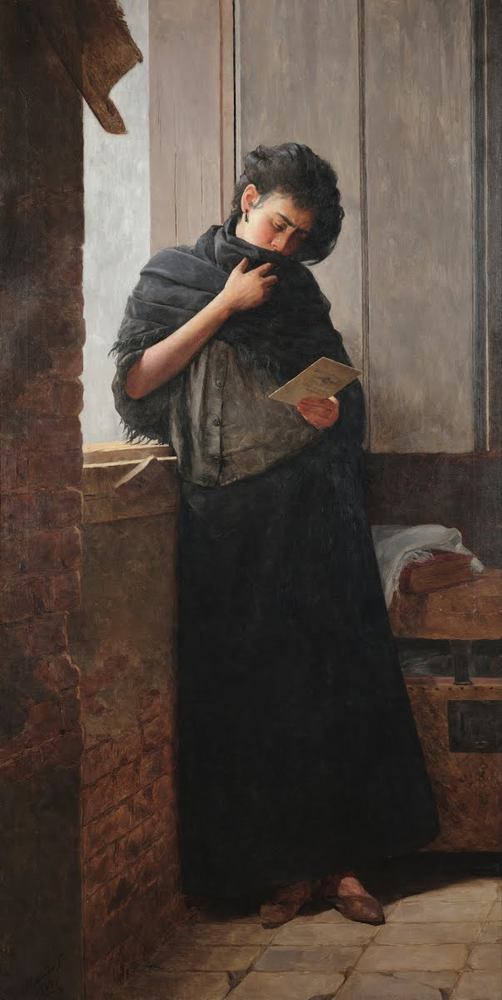
Saudade
Riproduzione dell’opera, non copertina di un libro: Pinacoteca de São Paulo · 1899
Riproduzione museale autentica. Non copertina di una traduzione di Pessoa e non prova dell’intenzione dell’artista oltre quanto documentato.
Il relatore presenta Saudade del pittore brasiliano Almeida Júnior e indica 1899; titolo e identità verificati presso la Pinacoteca de São Paulo.
Passaggio 1:43 ↗ · Fonti e libro ↗
Il libro dell’inquietudine (Livro do Desassossego)
Identificazione probabile
Copertina: Opera postuma pubblicata per la prima volta nel 1982; frammenti con assetti e selezioni diversi nelle edizioni successive. Copertina corrente Newton Compton, Vintage 67, rilegato, 416 pagine, a cura di Piero Ceccucci, traduzioni di Orietta Abbati e Piero Ceccucci, ISBN 9791224208372. Il catalogo consultato non determina qui la data della ristampa. Non è la copertina della edizione Feltrinelli di Tabucchi e de Lancastre.
Immagine autentica dell’opera, controllata visivamente; l’edizione di riferimento non è attribuita al filmato.
La frase sulla nostalgia delle cose mai avvenute è pronunciata come versi di Pessoa. Il riscontro testuale nella ricerca Coimbra la colloca invece nella prosa del Livro do Desassossego: riutilizzata la voce già esistente, senza inventare una poesia autonoma.
Passaggio 3:42 ↗ · Fonti e libro ↗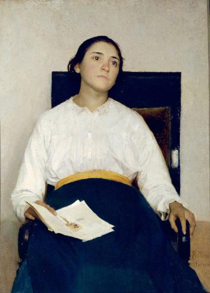
Ricordo di un dolore (Ritratto di Santina Negri)
Riproduzione dell’opera, non copertina di un libro: Accademia Carrara, Bergamo · 1889
Riproduzione originale del catalogo regionale. Il giudizio del relatore sul rilievo minore del pittore è soggettivo, non una classificazione museale.
Ricordo di un dolore, Pellizza da Volpedo e la giovane assorta sono espliciti. Il catalogo Carrara/Regione Lombardia conferma il ritratto di Santina Negri 1889.
Passaggio 5:53 ↗ · Fonti e libro ↗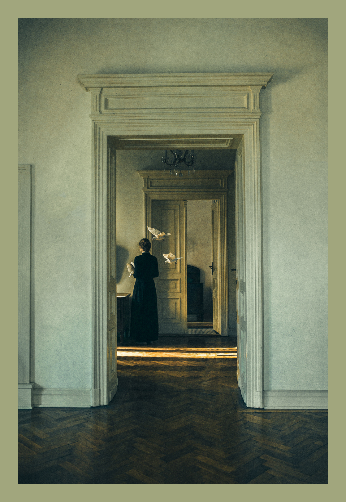
The Anatomy of Melancholy
Identificazione probabile
Riproduzione della fotografia dal sito dell’artista, non copertina: The Anatomy of Melancholy, Laura Makabresku, 2020 secondo l’elenco del sito ufficiale. Riproduzione fotografica integrale del file dell’artista con il suo margine originale; non copertina di un libro.
Titolo, anno e associazione al file provengono dall’HTML pubblico del sito ufficiale. Il 2020 non è pronunciato nel passo ASR. Identificazione della fotografia discussa probabile: non è certificata una collazione visiva con il filmato e non è identificata una specifica tiratura fisica. La riproduzione non implica una dichiarazione di pubblico dominio.
Segmento 67, 448,58–458,88 s: nome dell’artista deformato Laura Macabresco. Segmento 68, 458,88–485,95 s: titolo italiano e qualifica di autoritratto. Segmenti 71–74, 498,96–529,80 s: figura di spalle, stanze vuote e colombe in volo. Nel sito ufficiale l’elemento GalleryId2617 reca data-title="The Anatomy of Melancholy", data-year="2020" e il file 2-1.jpg, personalmente visto con composizione compatibile.
Passaggio 7:38 ↗ · Fonti e libro ↗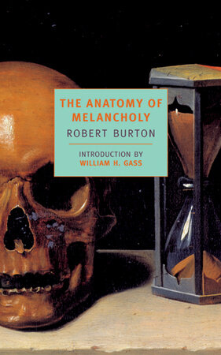
The Anatomy of Melancholy
Copertina: Copertina verticale originale NYRB Classics, 30 aprile 2001, 1424 pagine, introduzione di William H. Gass. Non è una delle edizioni italiane in tre volumi ricordate nel contributo; il 1621 riguarda la prima pubblicazione, non questa veste.
Immagine autentica dell’opera, controllata visivamente; l’edizione di riferimento non è attribuita al filmato.
Il testo di Robert Burton è nominato in relazione al titolo The Anatomy of Melancholy di Makabresku. Riutilizzata l’opera 1621, senza creare tre libri dal riferimento orale a tre volumi.
Passaggio 7:38 ↗ · Fonti e libro ↗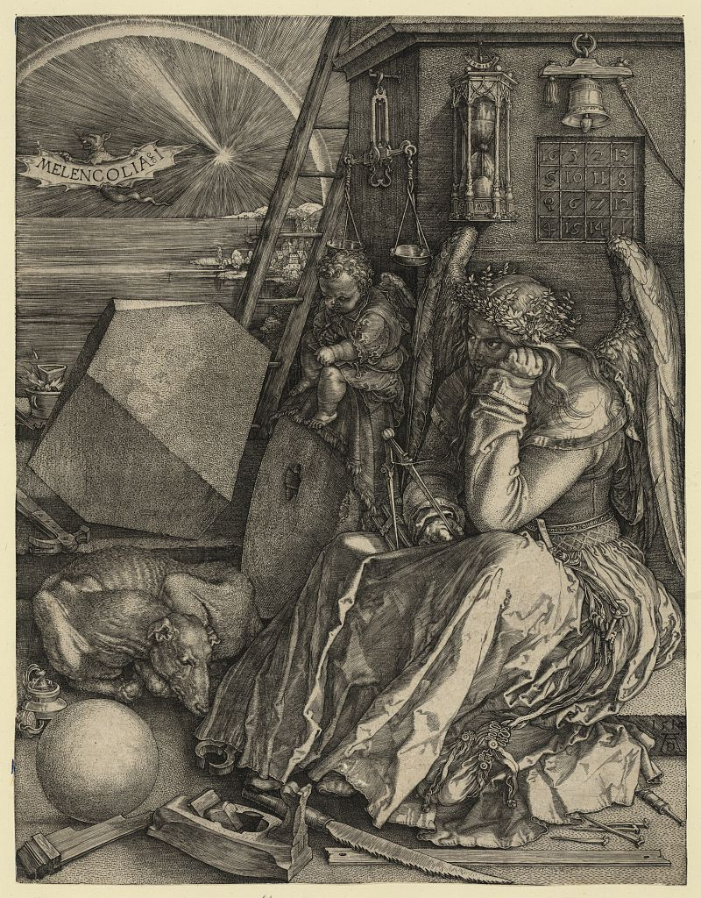
Melencolia I
Riproduzione dell’opera, non copertina di un libro: Library of Congress · stampa 1514 · riproduzione LC-DIG-ppmsca-24004
Incisione intera, non dipinto né copertina di The Anatomy of Melancholy. La nota sulla madre di Dürer corregge il giorno del decesso senza trasformare una lettura simbolica in intenzione dimostrata.
Melencolia di Dürer è analizzata nelle figure, oggetti e numeri, con 1514; identità dell’incisione verificata, non accertate tutte le interpretazioni simboliche del relatore.
Passaggio 8:49 ↗ · Fonti e libro ↗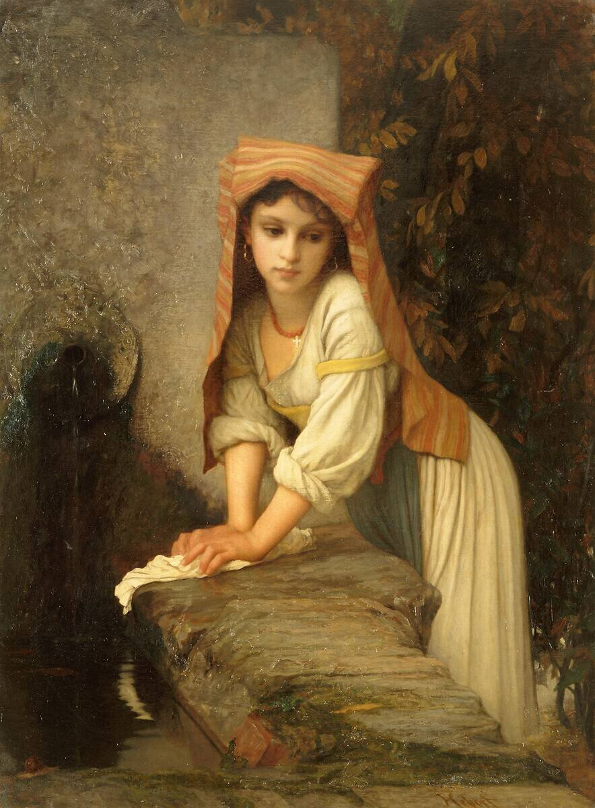
La Lavandara ou Jeune Lavandière songeuse
Riproduzione dell’opera, non copertina di un libro: Musée Hébert, Parigi · prima del 1869 · RF1978-55
Fotografia autentica RMN/Franck Raux. Il punto di vista sulla sospensione dal lavoro resta una lettura del relatore, non un pensiero documentato della modella.
Il nome di Hébert, la lavandaia e la scena di sospensione pensosa corrispondono al dipinto La Lavandara/Jeune Lavandière songeuse RF1978-55; non ad altra copia dello stesso soggetto.
Passaggio 15:11 ↗ · Fonti e libro ↗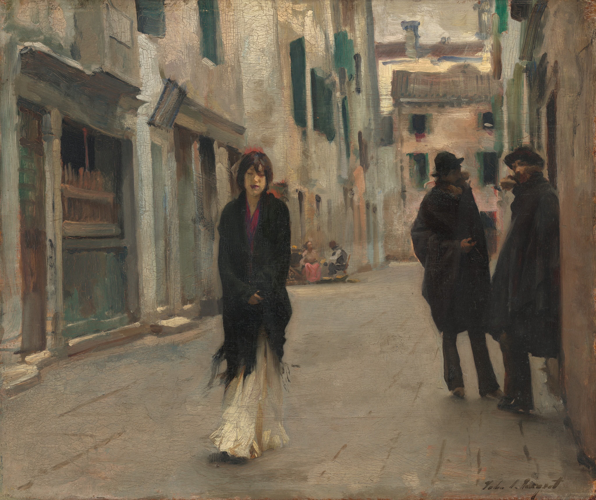
Street in Venice (Una strada a Venezia)
Riproduzione dell’opera, non copertina di un libro: National Gallery of Art, Washington · 1882 · 1962.4.1
Riproduzione IIIF integrale ufficiale NGA. Le emozioni della passante sono interpretazioni della scena, non biografia accertata.
Sargent, una strada a Venezia e 1882 sono espliciti; catalogo NGA1962.4.1 e riproduzione intera confermano l’opera.
Passaggio 18:07 ↗ · Fonti e libro ↗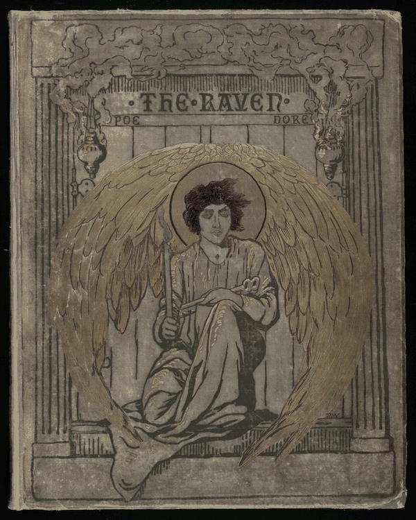
Il corvo (The Raven)
Coperta Harper 1884 della poesia The Raven, esemplare LOC: Poesia 1845 · immagine dell’edizione Harper & Brothers 1884, illustrata da Gustave Doré
Coperta autentica LOC dell’edizione illustrata 1884. Nessuna edizione particolare è identificata nel video e non viene attribuita a Poe l’illustrazione realizzata da Doré.
Il corvo di Edgar Allan Poe è nominato per confronto con l’uccello nella scena cinese. Non sostenuto un rapporto d’influenza storica fra i due autori.
Passaggio 25:03 ↗ · Fonti e libro ↗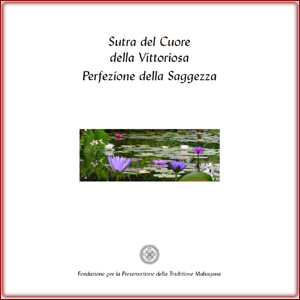
Sutra del Cuore (Prajñāpāramitāhṛdaya)
Identificazione probabile
Copertina FPMT del Sutra del Cuore, versione italiana 2008: FPMT · edizione italiana 2008 · 9 pagine
Copertina editoriale originale della versione italiana 2008. Il video non ne accerta l’edizione. Nel testo lungo il dialogo è pronunciato da Avalokiteśvara a Śāriputra e approvato dal Buddha: non ogni frase è un discorso diretto del Buddha.
Forma è vuoto, vuoto è forma e l’apostrofe a Shariputra rinviano probabilmente al Sutra del Cuore. Il titolo non è pronunciato; distinto il dialogo del testo lungo da un’asserita citazione diretta del Buddha.
Passaggio 26:43 ↗ · Fonti e libro ↗
Tao tê ching
Identificazione probabile
Copertina: Adelphi · Tao tê ching · edizione di riferimento
Immagine associata all’ISBN di riferimento e controllata visivamente; edizione e traduzione non identificate come quelle citate o lette nel video.
Il passo su porte, finestre e utilità del vuoto nella stanza corrisponde al capitolo 11 del Tao tê ching già censito. Non aggiunta una nuova opera da una diversa traduzione.
Passaggio 27:42 ↗ · Fonti e libro ↗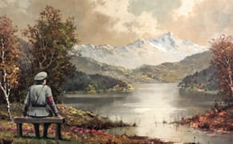
The Banality of the Banality of Evil
Riproduzione dell’opera, non copertina di un libro: Opera 2013 · riproduzione diffusa nel reportage contemporaneo
Riproduzione autentica intera a bassa risoluzione del quadro modificato. Il reportage attribuisce le immagini iniziali al sito di Banksy; l’identità è verificata anche dal destinatario originale. Non è copertina del saggio di Arendt e non se ne certifica la proprietà attuale.
Banksy e The Banality of the Banality of Evil 2013 sono presentati tramite la panchina con il nazista in un paesaggio riutilizzato. Housing Works è il negozio e destinatario della donazione, non Salvation Army.
Passaggio 28:35 ↗ · Fonti e libro ↗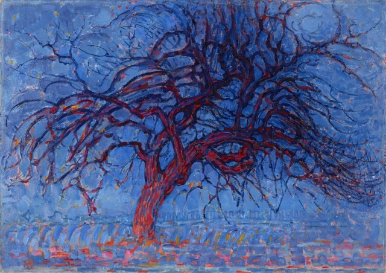
Avond (Evening): The Red Tree (L’albero rosso)
Riproduzione dell’opera, non copertina di un libro: Kunstmuseum Den Haag · 1908–1910 · 10918
Riproduzione museale intera. La lettura come anticipazione della guerra è interpretativa e non dimostra una previsione storica intenzionale.
L’albero rosso di Mondrian è nominato dopo uno studio preparatorio privo di titolo. Il catalogo Kunstmuseum verifica 1908–1910 e 10918; una sola voce per il dipinto identificato.
Passaggio 33:08 ↗ · Fonti e libro ↗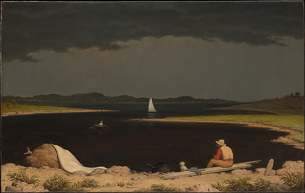
Approaching Thunder Storm (Temporale in arrivo)
Identificazione probabile
Riproduzione dell’opera, non copertina di un libro: Metropolitan Museum of Art · 1859 · 1975.160
Riproduzione autentica Met. Titolo ricostruito con riscontro convergente; mantenuto il grado probabile della corrispondenza con l’immagine del video.
Martin Johnson Heade,1859, uomo e cane sulla riva, barca e cielo tempestoso convergono con Approaching Thunder Storm del Met. Titolo non pronunciato: identificazione probabile.
Passaggio 38:26 ↗ · Fonti e libro ↗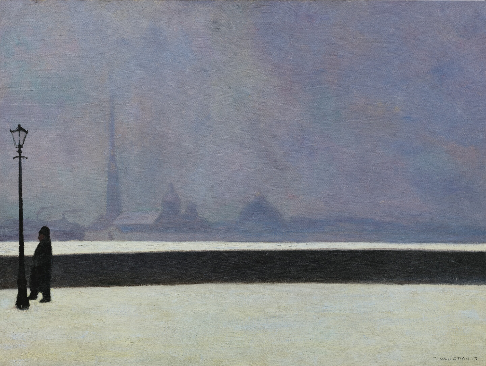
La Néva, brume légère (La Neva, nebbia leggera)
Riproduzione dell’opera, non copertina di un libro: Opera 1913 · catalogo Sotheby’s, Zurigo 2017, lotto 26
Fotografia autentica del lotto e quadro completo. Il fatto che l’opera sia stata dipinta a Parigi da schizzi del viaggio è distinto dalle emozioni che il relatore vi legge.
Vallotton, La Neva nebbia leggera e 1913 corrispondono al lotto Sotheby’s 26/2017. Distinta dall’altra Neva gelata del 1913.
Passaggio 39:54 ↗ · Fonti e libro ↗
Il Parnaso ambulante (Parnassus on Wheels)
Copertina: Romanzo originale 1917. Copertina autentica della edizione Sellerio, La memoria 263, 1992, traduzioni di Rosanna Pelà ed Enrico Piceni, ISBN 9788838908507. La scheda editoriale corrente indica 172 pagine; non si attribuisce tale paginazione a tutte le stampe o alla copia del relatore.
Immagine autentica dell’opera, controllata visivamente; l’edizione di riferimento non è attribuita al filmato.
Il Parnaso ambulante di Morley è esplicitamente nominato come libro che il relatore immagina adatto all’atmosfera del dipinto di Tanner. È un’associazione proposta, non documentazione di una copertina effettiva.
Passaggio 42:55 ↗ · Fonti e libro ↗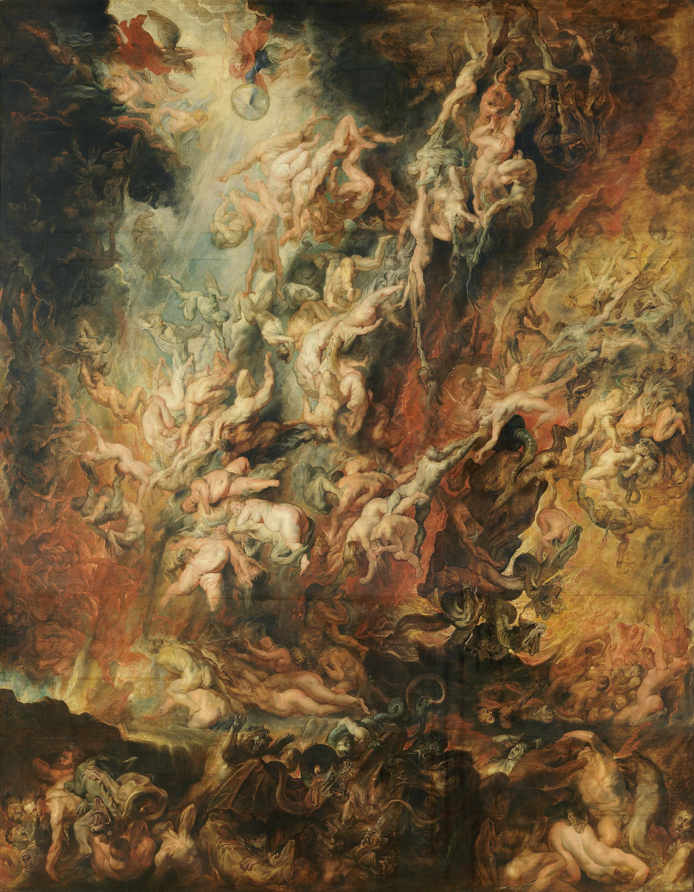
Der Höllensturz der Verdammten (La caduta dei dannati)
Riproduzione dell’opera, non copertina di un libro: Alte Pinakothek, Monaco · circa 1621 · inventario 320
Riproduzione integrale CC BY-SA BStGS dal CDN ufficialmente collegato. Misure secondo il catalogo museale attuale; vecchie schede presentano misure differenti.
Rubens e la caduta dei dannati sono nominati nel confronto fra forme diverse della caduta; il museo verifica l’opera su tavola circa 1621,inv 320.
Passaggio 46:57 ↗ · Fonti e libro ↗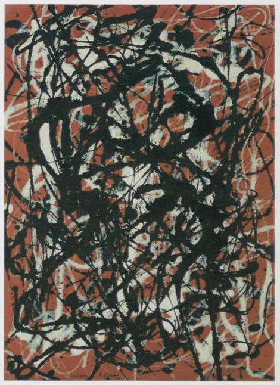
Free Form
Identificazione probabile
Riproduzione integrale di Free Form (1946), ricavata dalla tavola 105 a p. 209 del catalogo MoMA Jackson Pollock (1998); ritaglio della sola opera con piccolo margine. Non copertina né fotografia del video.: Jackson Pollock, Kirk Varnedoe con Pepe Karmel, The Museum of Modern Art,1998, tavola105,p.209 (paginaPDF216)
Edizione della riproduzione museale, non edizione dell’opera pittorica o volume identificato nel filmato. È conservata privatamente la pagina completa come prova della didascalia; si propone soltanto il ritaglio della riproduzione.
Segmenti356–364: il relatore nomina Pollock a2975.16s; a2986.88s lo dice primo drip painting, poi a2996.36–3029.90s descrive il fondo rosso e le aggiunte nere/bianche. Nessun titolo o inventario pronunciato. Corrispondenza probabile con la descrizione ufficiale MoMA di Free Form; non identificazione da titolo del video o da visione del filmato.
Passaggio 49:35 ↗ · Fonti e libro ↗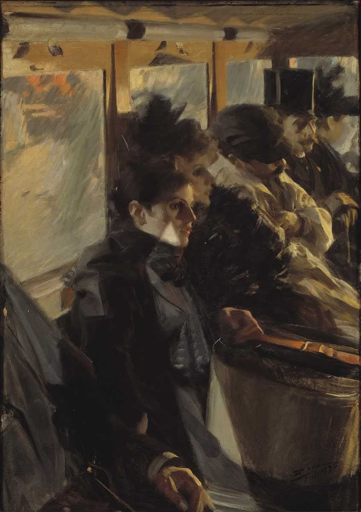
The Omnibus (Omnibus)
Riproduzione dell’opera, non copertina di un libro: Isabella Stewart Gardner Museum · 1892 · P3e1
Riproduzione museale del dipinto completo. Non dedotta una caratterizzazione sociale certa di ogni passeggero dai suoi vestiti.
Omnibus di Anders Zorn,1892, è esplicito. Riportata la voce del dipinto GardnerP3e1 e non l’acquaforte o una diversa variante.
Passaggio 54:22 ↗ · Fonti e libro ↗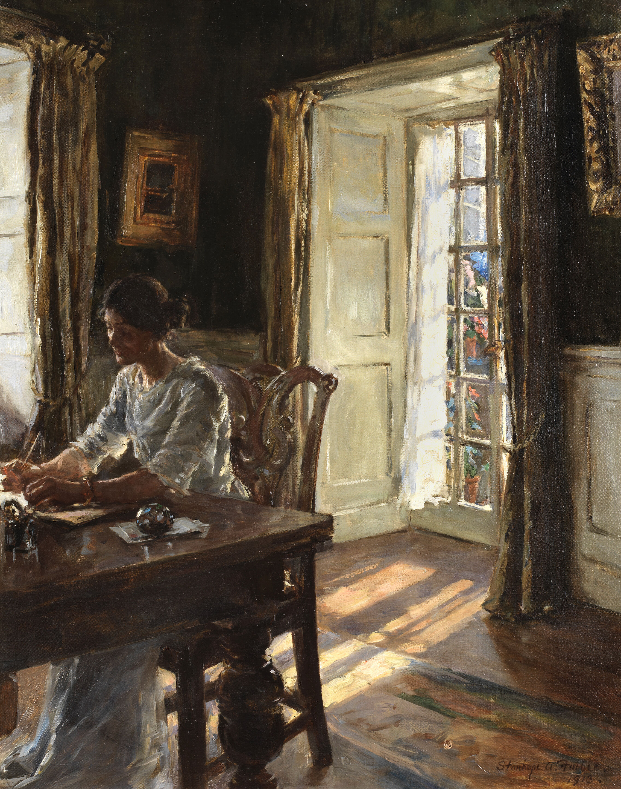
The Morning Room
Riproduzione dell’opera, non copertina di un libro: The Morning Room, 1913, Stanhope Alexander Forbes; olio su tela, 76,2 × 61 cm. Riproduzione fotografica dell’intera opera dal lotto originale Bonhams 88, 3 giugno 2020; non copertina di un libro.
Riproduzione fotografica autentica del dipinto, non copertina o variante somigliante. Il collegamento è sostenuto da autore, titolo tradotto, data 1913 e composizione con donna che scrive: nessuna revisione umana dell’audio o visione continua del video viene dichiarata.
Segmento 409, 3404.4–3410.81 s: data 1913; segmento 410, 3410.81–3418.25 s: titolo italiano La stanza del mattino e autore Stanhope Forbes. I segmenti 412–413, 3422.09–3445.86 s, descrivono luce, tessuti, tende e una donna che scrive. Il lotto Bonhams riscontra titolo inglese, autore, firma e data 1913, non ricostruisce parole mancanti del parlato.
Passaggio 56:50 ↗ · Fonti e libro ↗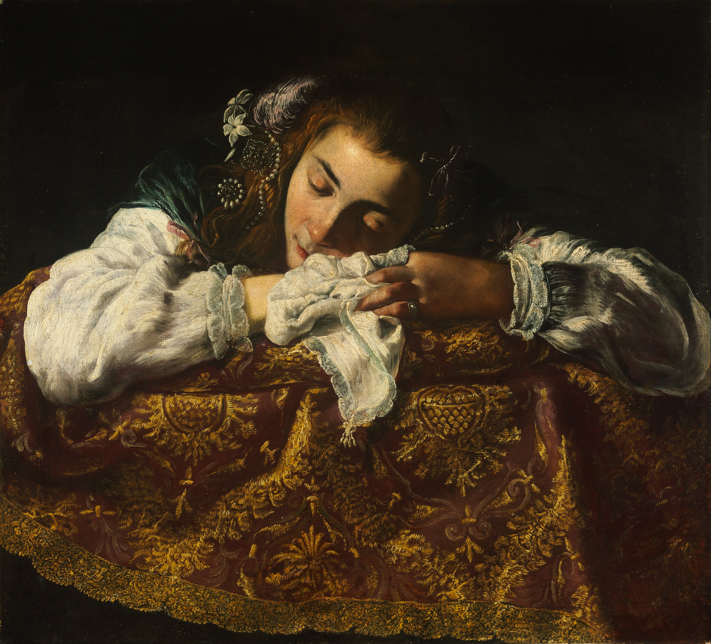
Sleeping Girl (Young Woman Sleeping)
Identificazione probabile
Riproduzione del dipinto · Budapest, inv. 609 · attribuzione discussa: Riproduzione integrale del dipinto conservato al Museum of Fine Arts Budapest, inventario 609. File storico Google Art Project, caricato su Commons nel 2012. La scheda museale Google Arts oggi consultabile reca Young Woman Sleeping, Theodoor van Loon (?) e ca. 1630.
Il nome Fetti e la data 1620–22 sono del parlato e delle vecchie didascalie, non conclusioni attributive definitive. Titolo, inventario e formato individuano l’opera; l’immagine non identifica un’edizione o l’esatto file digitale usato dal relatore. Riproduzione pittorica, non copertina libraria.
Il relatore pronuncia Domenico Fetti, propone una data fra 1620 e 1622 e usa il titolo inglese Sleeping Girl. Il riferimento a Caravaggio è un confronto distinto. L’associazione al dipinto di Budapest usa la storia attributiva, non una identificazione del volto.
Passaggio 1:02:06 ↗ · Fonti e libro ↗Minutaggi ricavati da testi automatici, da riascoltare. Le identificazioni probabili sono segnalate accanto ai libri.